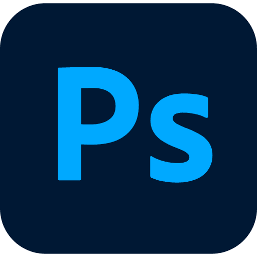
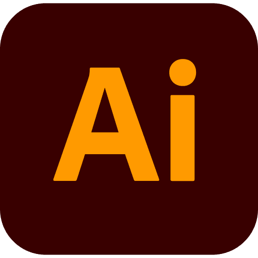
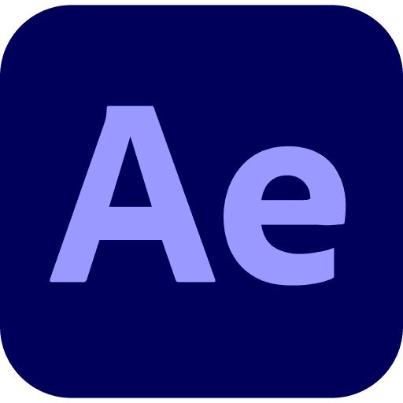
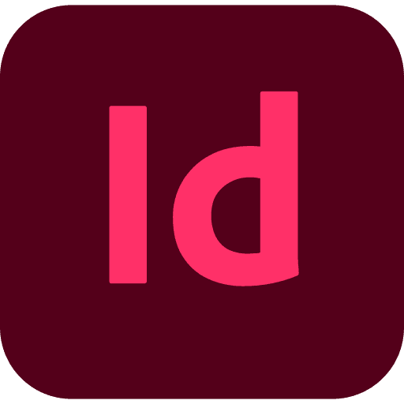

Nice to meet you!
I’m Erilyn, a graphic designer 🎨 from sunny California 🌴✨
A little bit about me
I'm currently @ SJSU Esports
I design and connect players through visuals that bring the community together. I’m here until graduation, making the most of every project and event. Every design feels like building a stage where fun happens including connecting with a community in our shared love of video games.
When I'm not designing
You’ll find me chasing waterfalls, hiking trails, or swimming in hidden lakes. I’m a fan of all things animated from cartoons to Pixar films. I enjoy playing video games like gacha (Honkai Star Rail, Infinity Nikki, Genshin Impact) or cozy games: Hello Kitty Island Adventure, The Sims 3, Peak. I love making memories, whether it’s on a wild adventure or trying out trendy foods.
Experience
- Adobe
- Adobe Student Ambassador
- APR 2023 - NOV 2024
Skills



